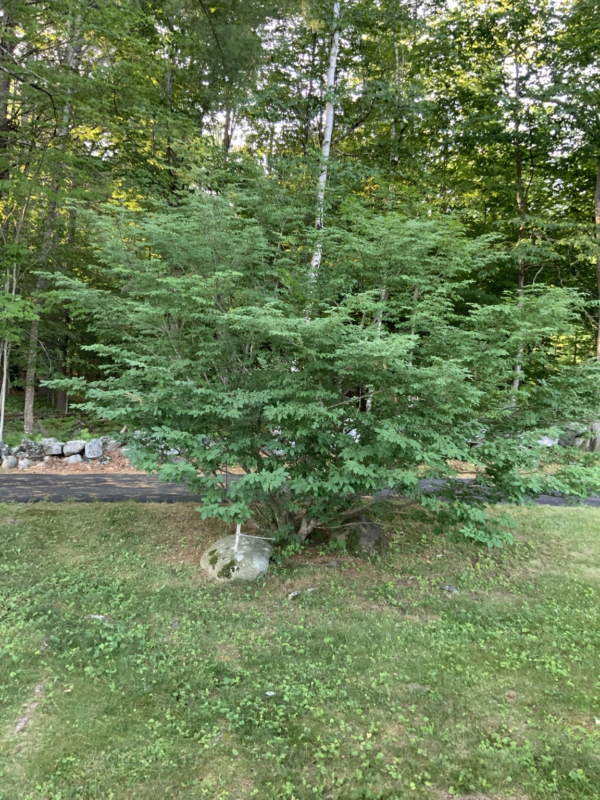
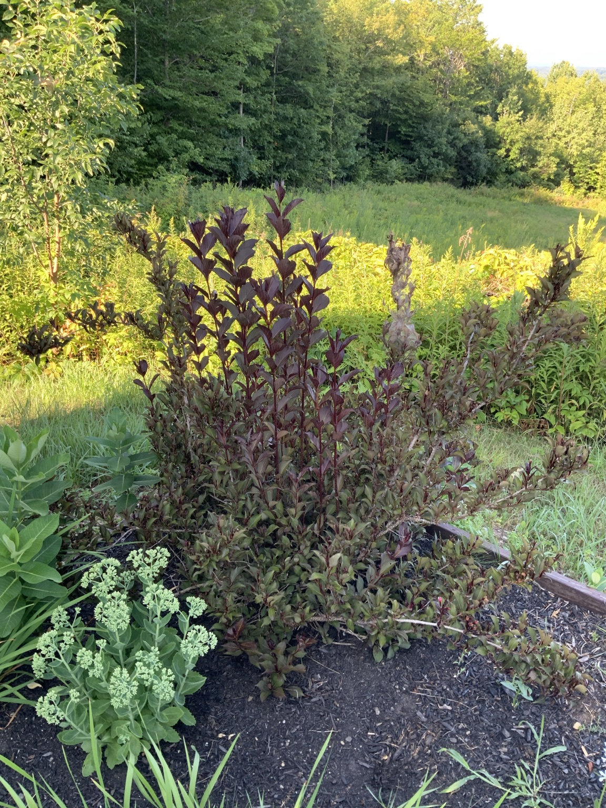
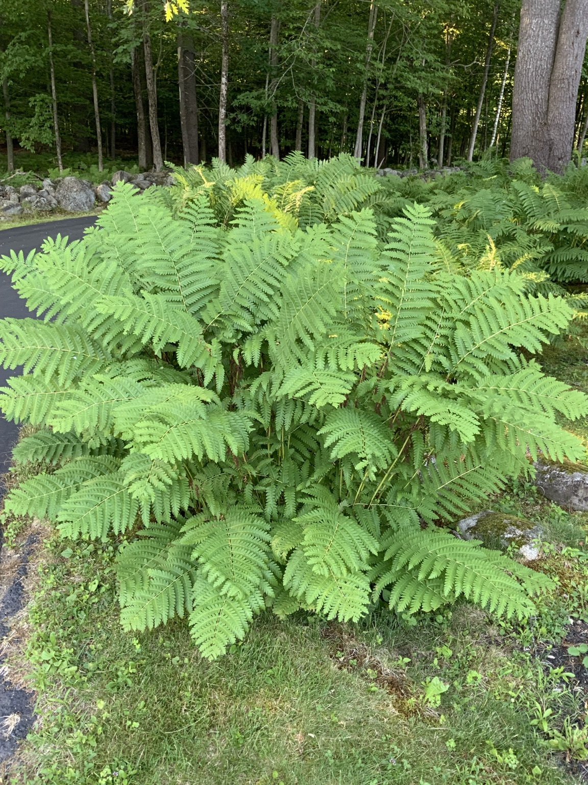

14 individual pages
Your confirmed plants plus one clearly marked identification-pending entry.

Individual page
Eastern White Pine
Pinus strobus
Open plant page →
Individual page
Eastern Hemlock
Tsuga canadensis
Open plant page →
Individual page
Ash Tree
Fraxinus species
Open plant page →
Individual page
Maple Tree
Acer species
Open plant page →
Individual page
Magnolia
Magnolia species
Open plant page →
Individual page
Rhododendron
Rhododendron species
Open plant page →
Individual page
Smokebush
Cotinus coggygria
Open plant page →
Individual page
Purpleleaf Sand Cherry
Prunus × cistena
Open plant page →
Individual page
Lilac
Syringa species
Open plant page →
Individual page
Burning Bush
Euonymus alatus
Open plant page →
Individual page
Weigela
Weigela florida
Open plant page →
Individual page
Rose Bush
Rosa species
Open plant page →
Individual page
Red-Berried Shrub
Identification pending
Open plant page →
Individual page
Hydrangea
Hydrangea species
Open plant page →New Shrub Photographs · July 28, 2026

Mature specimen with burgundy summer foliage.
Established hydrangea beside the stone border.

Burgundy foliage and vigorous midsummer growth.

Large naturalized fern colony near the woodland edge.